Language acquisition
Neurocognitive development
Màster en Neurociències, Universitat de Barcelona
![]()
2026-02-24
Language acquisition
What is language?
No easy, complete, specific way to define language
- Complete: captures all features of language
- Specific: captures only features of language
What is language?
What is language?
What is language?
Language as an object
Finite system of symbols (words) that can be combined using rules to make a virtually infinite number of distinct sentences.
What is language?
What is language?
What is language?
What is language?
Language as an object
Finite system of symbols (words) that can be combined using rules to make a virtually infinite number of distinct sentences.
Words (symbols, in general) hold arbitrary relationship between form and meaning
What is language?
Language as an object
Finite system of symbols (words) that can be combined using rules to make a virtually infinite number of distinct sentences.
Limited number of words in a language
What is language?
Language as an object
Finite system of symbols (words) that can be combined using rules to make a virtually infinite number of distinct sentences.
Words (and other linguistic units) are combined in systematic ways, following rules we know as grammar
What is language?
Language as an object
7,745 identified languages (Glottolog)
| AES status | # of languages | % of languages |
|---|---|---|
| not endangered | 2643 | 34.13% |
| threatened | 1595 | 20.59% |
| shifting | 1805 | 23.31% |
| moribund | 422 | 5.45% |
| nearly extinct | 299 | 3.86% |
| extinct | 981 | 12.67% |
What is language?
Language as a function
Ability to systematically combine (grammar) a finite set of symbols (words) provided by a language so that a virtually ilimited number of sentences can be created (productivity).
What is language?
Language as a function
Ability to systematically combine (grammar) a finite set of symbols (words) provided by a language so that a virtually ilimited number of sentences can be created (productivity).
- Can Koko combine signs productively to communicate complex ideas?
- Is Alex’s communication symbolic?
What is language like?
- Linguistics
- Scientific study of language(s)
Languages are made of different linguistic units
Linguistic units are organised hierarchically
 1
1
What is language like?
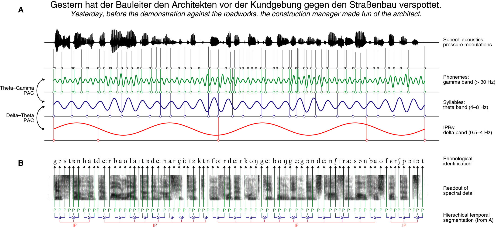1
What is language like?
- Phonemes
- Speech sounds that distinguish words with different meaning:
/kaza/ vs. /kasa/
What is language like?
- Phonemes
- Speech sounds that distinguish words with different meaning:
Phonemes ≠ Letters
- casa [Catalan for house]
- 4 letters, 4 phonemes: /k a z a/
- cotxe [Catalan for car]
- 5 letters, 4 phonemes: /k o t͡ʃ ə/
What is language like?
- Syllables
- Minimal unit of pronunciation.
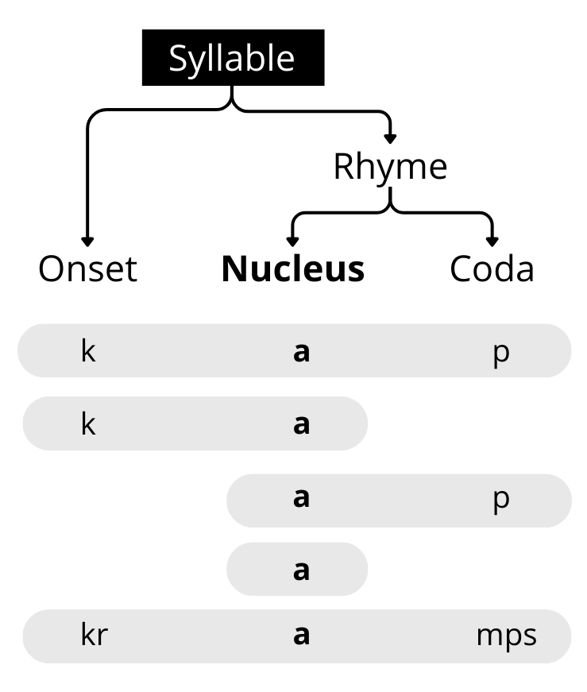
What is language like?
- Words
- Minimal unit of meaning. Form-meaning association.
What is language like?
- Sentence
- Words organised into grammatically coherent structures. Maximal unit of speech production.
What is language for?
Language provides clear evolutionary advantages
What is language for?
Language as a tool for communication
The ability for complex thinking provided humans with the ability to learn language1.
Claims:
- Complex thinking does not necessarily engage language-related brain areas and vice versa (double dissociation)2
What is language for?
Language as a tool for thinking
The ability to use language provided humans with complex thinking1.
Claims:
- (Some forms of) thinking require or are facilitated by language (e.g., Lupyan et al., 2007)
Where does language come from?
Symbolic communication appears between 1,000,000 and 100,000 years ago (Homo erectus)1.
Why? How? Two approaches:
- Language “appears”2
- Language develops3
Where does language come from?
Can only be investigated indirectly:
- Sparse archaeological evidence
- Cultural transmission and evolution
- Evolutionary biology
Language acquisition
Is language learned?
- Humans need exposure to language to acquire language
- Not all humans speak the same language, and genes do not explain such differences
Is language inherited?
- Humans acquire their native language(s) in little time, without effort, and without explicit instruction
- Stimulus poverty: language cannot be possible learnt from experience alone (lack of positive and negative evidence)
- Language is unique to humans, non-human animals do not acquire language even after intensive training
Current views on language ontogeny
Which aspects are more experience dependent?
Which experience do they depend on?
Which mechanisms underlie language learning?
To what extent do humans share these mechanisms with other species?
Before-birth
Pre-natal language acquisition
Acoustics in the womb
Acoustics in the womb
- Biological tissues filter the acoustic signal
- Low-pass filter: lower frequencies reach the fetus’ ears, higher frequencies do not
Fetal auditory development
- Auditory system functional by 24 weeks of gestation
- Fetus’ get familiarized with prosodic features of their native language(s)
- Intonation: modulation of the frequency of speech sounds across segments
- Rhythm: rate at which linguistic units are produce per unit of time
- Still unfamiliar with segmental information (i.e., different consonants)
0-6 months of age
First encounters with language
Infants show a preference towards speech, compared to non-speech sounds1.
High Amplitude Sucking (HAS) procedure2
First encounters with language
First encounters with language
Infants show a preference towards speech, compared to non-speech sounds1.
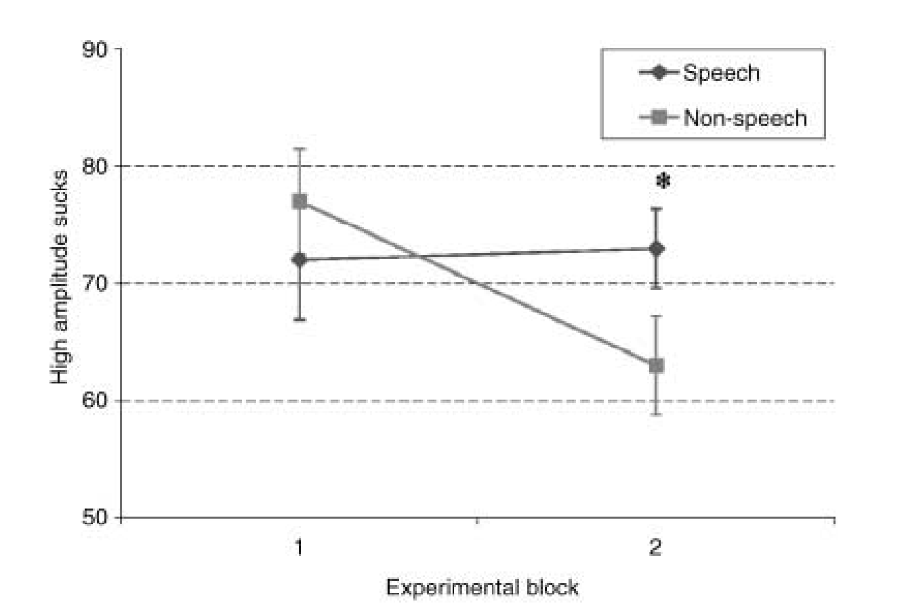
Language discrimination
Neonates can discriminate between languages from different rhythm classes1.
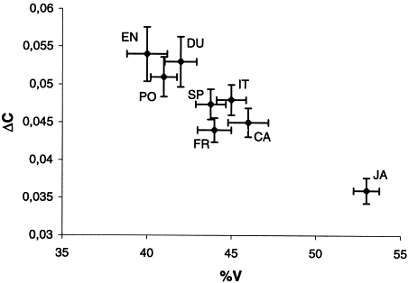2
Language discrimination
Neonates can discriminate between languages from different rhythm classes1.
Nazzi et al. (1998)
- Presented newborns with low-pass filtered sentences produced by natural speakersc (keeping prosodic but not segmental information)
- Sentences belonged to a stress-timed (English, Dutch) or a mora-timed (Japanese) language
Language discrimination
Neonates can discriminate between languages from different rhythm classes1.
Nazzi et al. (1998)
English (stress-timed) vs. Japanese (mora-timed)
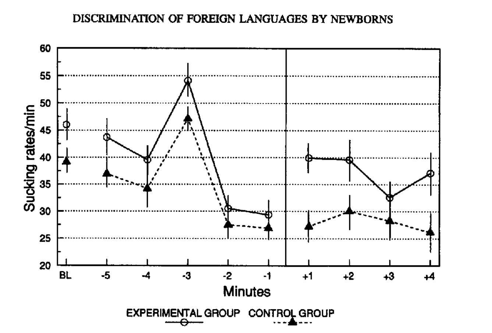
Language discrimination
Neonates can discriminate between languages from different rhythm classes1.
Nazzi et al. (1998)
English (stress-timed) vs. Dutch (stress-timed)

Language discrimination
Neonates can discriminate between languages from different rhythm classes1.
Nazzi et al. (1998)
English (stress-timed) vs. Dutch (stress-timed)
6-12 months of age
Perceptual narrowing
From 6 to 12 months of age, infants attune their perceptual abilities to the sounds of their native language1.
Werker and Tees (1984)
Three groups of participants:
- 6 month-old infants
- English native adults
- Thompson (Nlaka’pamuctsin, native American) native adults
Perceptual narrowing
From 6 to 12 months of age, infants attune their perceptual abilities to the sounds of their native language1.
Werker and Tees (1984)
Three groups of participants, exposed to exemplars of the /k/-/q/ consonant contrast2:
- 6 month-old infants
- English native adults
- Thompson (Nlaka’pamuctsin, native American) native adults
Perceptual narrowing
From 6 to 12 months of age, infants attune their perceptual abilities to the sounds of their native language1.
Werker and Tees (1984)
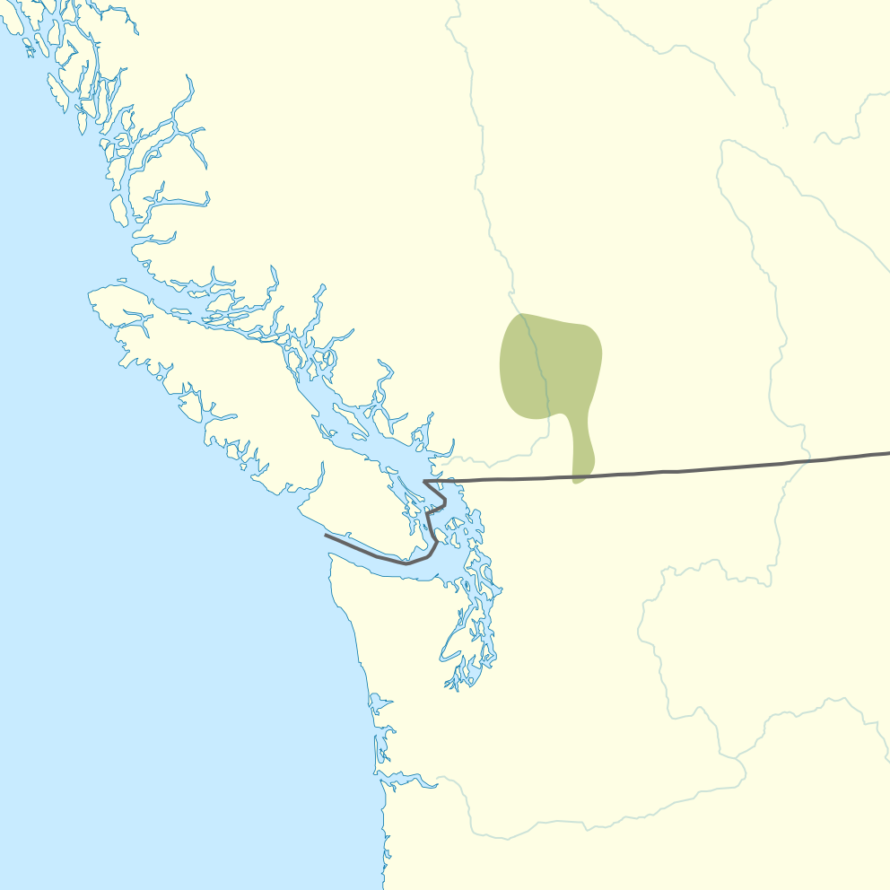
Perceptual narrowing
From 6 to 12 months of age, infants attune their perceptual abilities to the sounds of their native language1.
Werker and Tees (1984)
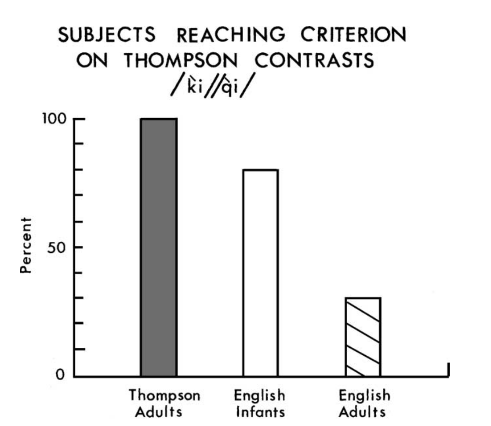
Perceptual narrowing
From 6 to 12 months of age, infants attune their perceptual abilities to the sounds of their native language1.
Werker and Tees (1984)
Statistical learning
Infants exploit statistical regularities to segment the continuous speech signal into discrete units1
Statistical learning
Infants exploit statistical regularities to segment the continuous speech signal into discrete units1
prettybaby
Transitional probabilites (TP): relative number of co-ocurrences between two syllables
\[ Y|X = \frac{\text{frequency of }XY}{\text{frequency of }X} \]
Statistical learning
Infants exploit statistical regularities to segment the continuous speech signal into discrete units1
prettybaby
\(TP_{tty|pre} > TP_{ba|tty}\)
Statistical learning
Infants exploit statistical regularities to segment the continuous speech signal into discrete units1
prettybaby
Statistical learning
…tupirogolabubidakupadotigolabutupiropadotibidaku…
Statistical learning
Is golabu a word?
Statistical learning
Is golabu a word?
Is labubi a word?
Statistical learning
…tupirogolabubidakupadotigolabutupiropadotibidaku…
Statistical learning
…tupirogolabubidakupadotigolabutupiropadotibidaku…
Statistical learning
…tupiro-golabu-bidaku-padoti-golabu-tupiro-padoti-bidaku…
Statistical learning
…tupiro-golabu-bidaku-padoti-golabu-tupiro-padoti-bidaku…
…tupi-rogola-bubida-kupado-tigola-butupi-ropado-tibida-ku…
Statistical learning
…tupiro-golabu-bidaku-padoti-golabu-tupiro-padoti-bidaku…
…tupi-rogola-bubida-kupado-tigola-butupi-ropado-tibida-ku…
…tu-pirogo-labubi-dakupa-dotigo-labutu-piropa-dotibi-daku…
Statistical learning
…tupirogolabubidakupadotigolabutupiropadotibidaku…
\[ p(\text{la|go}) = 1.0 \]
Statistical learning
…tupirogolabubidakupadotigolabutupiropadotibidaku…
\[ p(\text{bu|la}) = 1.0 \]
Statistical learning
…tupirogolabubidakupadotigolabutupiropadotibidaku…
\[ p(\text{bi|bu}) = 0.5 \]
Statistical learning
…tupirogolabubidakupadotigolabutupiropadotibidaku…
\[ p(\text{da|bi}) = 1.0 \]
Statistical learning
…tupirogolabubidakupadotigolabutupiropadotibidaku…
\[ p(\text{ku|da}) = 1.0 \]
Statistical learning
…tupirogolabubidakupadotigolabutupiropadotibidaku…
\[ p(\text{pa|ku}) = 0.5 \]
Phonotactics
Rules governing the possible phoneme sequences in a language.
- Can /b/ and /l/ go together in Catalan?
- blanca [Catalan for white]: /blaŋkə/
Phonotactics
Rules governing the possible phoneme sequences in a (particular) language.
Can /b/ and /l/ go together in…
- Catalan: blanca [Catalan for white] /blaŋkə/
- English: blue: /bluː/
Phonotactics
Rules governing the possible phoneme sequences in a (particular) language.
Can /s/ and /s/ go together in…
- Catalan: ??
- English: slow /sləʊ/
Phonotactics
From 9 months of age, infants show sensitivity to phonotactics in their native language1.
Friederici and Wessels (1995)
4.5, 6 and 9 month-old Dutch native infants
Three conditions, based on their phonotacticality:
- Legal syllables (e.g., bref, murt)
- Illegal onset (e.g., rtum)
- Illegal coda (e.g., febr)
Phonotactics
From 9 months of age, infants show sensitivity to phonotactics in their native language1.
Headturn Preference Procedure (HPP):
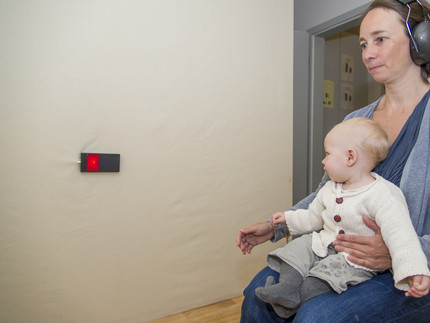
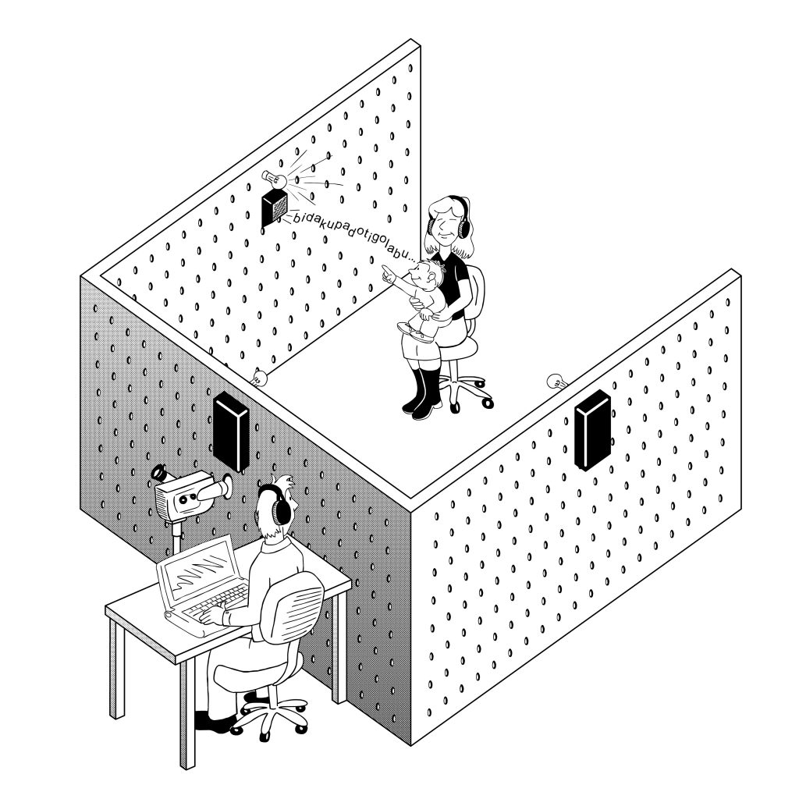
Phonotactics
From 9 months of age, infants show sensitivity to phonotactics in their native language1.
9 month-old infants (but not younger infants) looked longer to trials in which legal syllables were presented, compared to illegal syllables.
Word acquisition
Infants acquire their first words aroud 6 months of age1.
Word acquisition
Infants acquire their first words aroud 6 months of age1.
Bergelson and Swingley (2012)
Auditory word recognition study using eye-tracking
 .
.
Word acquisition
Infants acquire their first words aroud 6 months of age1.
Bergelson and Swingley (2012)
Auditory word recognition study using eye-tracking
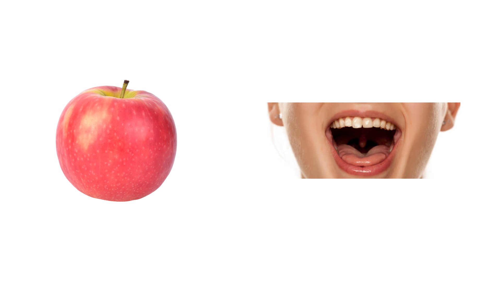
Word acquisition
Infants acquire their first words aroud 6 months of age1.
Bergelson and Swingley (2012)
Auditory word recognition study using eye-tracking

Word acquisition
Infants acquire their first words aroud 6 months of age1.
Bergelson and Swingley (2012)
Auditory word recognition study using eye-tracking

Word acquisition
Infants acquire their first words aroud 6 months of age1.
Bergelson and Swingley (2012)
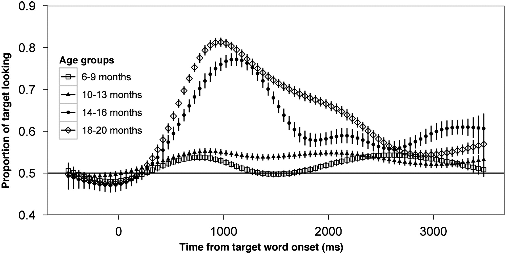
12-24 months
Vocabulary spurt
From 12 months of age onwards, infants’ vocabulary grows at a steady rate until 18 months of age. From 12 to 24 months, it grows much faster (vocabulary spurt).1.
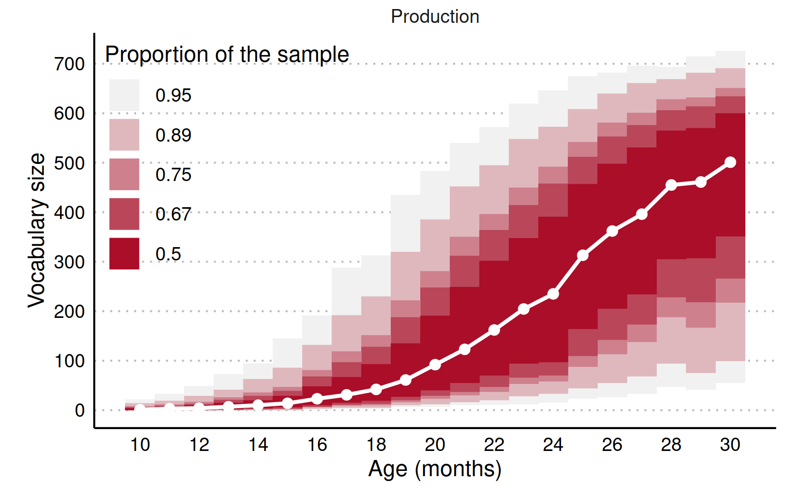
Vocabulary spurt
From 12 months of age onwards, infants’ vocabulary grows at a steady rate until 18 months of age. From 12 to 24 months, it grows much faster (vocabulary spurt).1.
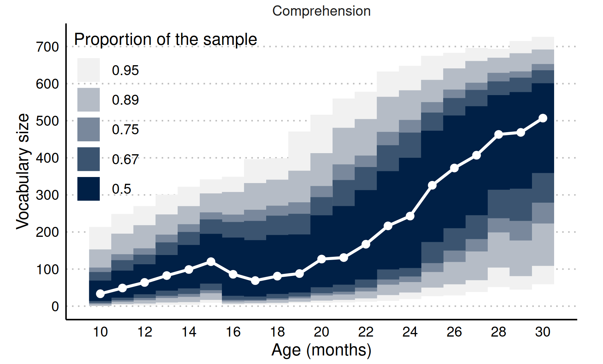
Lexical development
In the adult lexicon, words are stored as a network of phonological and semantic representations of nodes, interconnected by their conceptual or phonological relatedness1
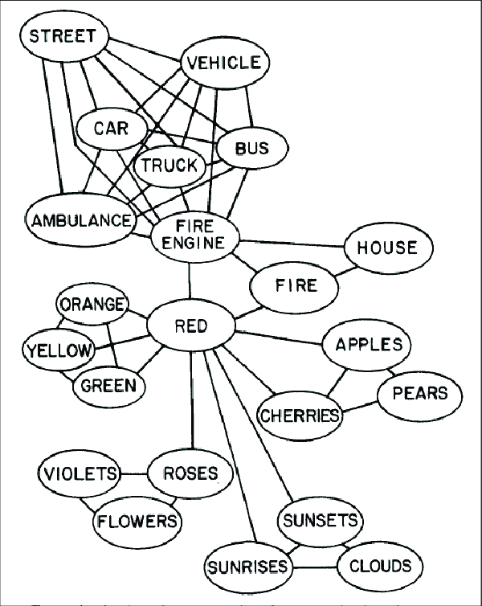
Lexical development
In the adult lexicon, words are stored as a network of phonological and semantic representations of nodes, interconnected by their conceptual or phonological relatedness1
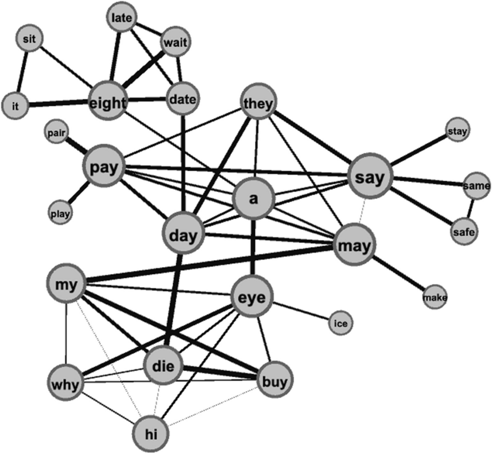
Lexical development
Lexical decision task: Is the presented word a real word in English?
- Raise your left hand if yes
- Raise your right hand if yes
PLANT
MALDS
TREE
Wait for the second word!
XXXXX
TABLE
NURSE
DOCTOR
XXXXX
BIRD
CAT
PLANE
Lexical development
Responses are
Lexical development
Between 18 and 21s months, words start being represented in infants’ mental lexicon in association with other phonologically and semantically related word.1.
Arias-Trejo and Plunkett (2009)
Semantic priming task, auditory word recognition.
Lexical development
Between 18 and 21 months, words start being represented in infants’ mental lexicon in association with other phonologically and semantically related word.1.
Arias-Trejo and Plunkett (2009)
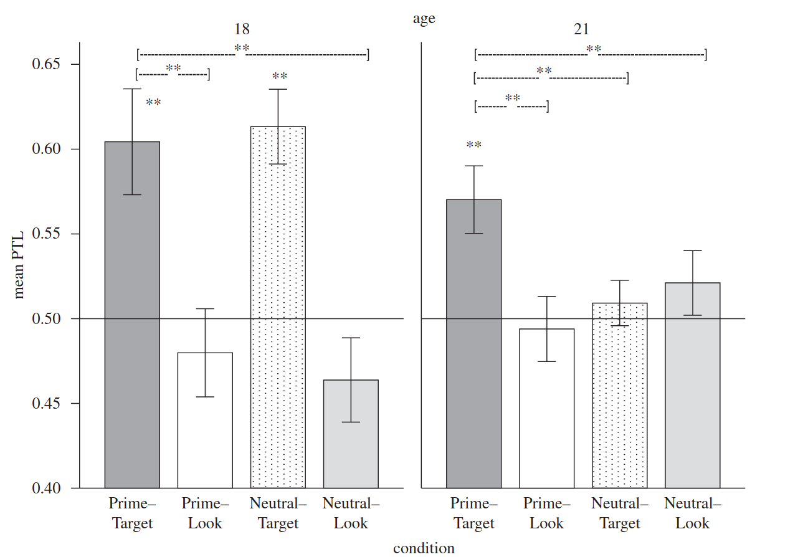